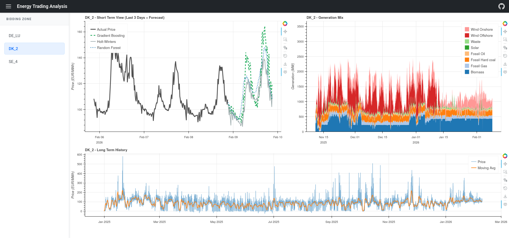

End-to-end walkthrough of the data pipeline, forecast models, and accuracy evaluation.

Each bidding zone (DE_LU, DK_2, SE_4, …) gets its own report with four sections:
A single GitHub Actions cron runs once a day. It downloads new data from ENTSO-E, retrains the models, runs the backtest, and rebuilds the static HTML reports.
All raw data comes from ENTSO-E's Transparency Platform, the official source for European electricity market data.
| What | Why we use it | Resolution |
|---|---|---|
| Day-ahead spot prices | This is the target — what we're trying to forecast. | Hourly < Oct 2025 → 15-min after |
| Actual generation by fuel | Displayed in the generation-mix chart; not used in forecasts (it's only published after the fact). | 15-min / hourly |
| TSO load forecast | Demand drives price. Published the day before delivery, so it's available when forecasting. | 15-min |
| TSO wind & solar forecast | Renewable supply cuts price. Published with the load forecast. | 15-min |
Each zone gets a folder under data/<zone>/ with one CSV per data type. The downloader reads the last line of each existing CSV and asks ENTSO-E only for what's missing, then appends. Spot & generation queries end at "now"; forecast queries end at "now + 2 days" so we capture tomorrow's published TSO forecast. The whole download is resume-safe — re-running it is cheap.
The market resolution flips on 2025-10-01 from hourly to 15-min in several zones. The pipeline auto-detects this per zone by looking at the median spacing of the last week of data, and trains at that native resolution. Mixing both via forward-fill (the old behavior) artificially inflates sample counts 4× with duplicates and biases seasonal models.
Before any model sees data, we build a feature table that combines:
python-holidays; zones like DE_LU union the German and Luxembourgish calendars).Two layouts are produced from the same raw features:
(n, horizon). Used by Random Forest as a true multi-output regressor.(n × horizon,), with the horizon step itself stored as a feature. Used by LightGBM — a single fit learns all 96 forecast steps at once. This replaces the previous MultiOutputRegressor-around-HGB which trained 96 separate boosters per fit (≈10× slower).For each origin t and horizon offset h, the long-format row carries the lags ending at t but the calendar + exogenous features for the target timestamp t+h. The target itself is the price at t+h. See src/features.py.
Four forecasts are produced for every zone, all at the zone's native market resolution and over a 24-hour horizon:
Predicts each future point by simply copying the value from exactly 7 days ago at the same time-of-week. No learning, no parameters — just a sanity floor. Every other model is judged by how much it beats this one (the MASE metric reports this ratio directly).
Classical triple exponential smoothing: decomposes the series into level + trend + daily seasonal pattern and projects them forward. Fast, no exogenous inputs. Gets the daily shape roughly right but doesn't react to load/wind anomalies.
Gradient-boosted decision trees on the full feature stack — lags + calendar + holidays + exogenous forecasts. Three separate fits at quantile levels 0.1 / 0.5 / 0.9 give a point forecast (the median) plus an 80% prediction interval. On DE_LU it beats seasonal-naive by roughly 3× (MASE ≈ 0.67).
A bagged-tree multi-output regressor on the same features. Generally not as accurate as LightGBM on this problem, but uncorrelated errors mean it's useful as an ensemble member and as a sanity check.
LightGBM quantile: three lgb.LGBMRegressor(objective="quantile", alpha=q) models for q ∈ {0.1, 0.5, 0.9}, each trained on the long-format matrix. The prediction intervals are then monotonized (lo ≤ median ≤ hi) to avoid quantile crossing.
Holt-Winters intervals come from split conformal prediction: hold out the last horizon observations, fit on the rest, compute the absolute residuals on the holdout, and use the α-quantile of those residuals as the half-width of the interval. Distribution-free — no assumption that residuals are Gaussian.
All hyperparameters live in analysis.DEFAULT_PARAMS and can be overridden by writing data/best_params.json from the offline tuner.
Forecasts are only useful if you know how wrong they tend to be. Every analyze run also performs a 30-day walk-forward backtest:
That gives us 30 × 24 = 720 hourly predictions per model (or 30 × 96 = 2880 at 15-min resolution), all of them strictly out-of-sample. Five accuracy metrics are computed per model:
| Metric | What it tells you |
|---|---|
| MAE (Mean Absolute Error) | Average miss in €/MWh. Easiest to interpret — directly comparable to spot prices. |
| RMSE | Penalizes big misses extra. If RMSE ≫ MAE, the model has occasional large errors. |
| sMAPE | Percentage error, symmetric so it doesn't explode near zero (electricity prices regularly cross zero — plain MAPE is unusable here). |
| Bias | Mean signed error. Positive = over-forecast on average; negative = under-forecast. Should be close to zero. |
| MASE | How much better than the seasonal-naive baseline. <1 = beats baseline; ≥1 = doesn't. |
Daily folds, weekly ML refit. Refitting LightGBM and Random Forest at every fold would be wasteful — the feature distribution barely shifts day-to-day — so we refit them every 7 folds and reuse between. Holt-Winters and the seasonal-naive baseline are cheap so they refit every fold.
Cuts are spaced exactly one day apart at midnight UTC (cut = start + k × steps_per_day) so each fold corresponds to a real day-ahead bidding round. The MASE denominator uses the seasonal-naive forecast on the training data — anything <1 is genuinely better than "predict yesterday".
See src/backtest.py and src/metrics.py.
Three things to check when comparing models:
The whole pipeline is one Python entry-point and a couple of supporting scripts:
python src/main.py download # fetch new data from ENTSO-E
python src/main.py analyze # live forecast + backtest
python src/main.py plot # rebuild the dashboards
python src/tune.py --zone DE_LU # offline hyperparameter searchA GitHub Actions cron does the first three steps daily at 00:05 UTC and pushes the regenerated data/ + docs/ back to the repository. The site you're looking at is the static docs/ folder served via GitHub Pages (or nginx in Docker).